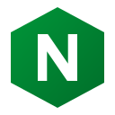
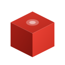

Alternatif modern, super kencang, dan elegan pengganti XAMPP, Laragon, dan Herd. Ditenagai performa native Rust, manajemen multi-runtime (PHP, Nginx, Apache, MySQL, Postgres, Redis), auto virtual host pintar ala Laragon, dan workspace database visual bawaan.

Nginx
RedisJelajahi antarmuka native yang bersih, cepat, dan intuitif. Dirancang dari nol dengan Rust dan Tauri untuk memberikan kenyamanan maksimal bagi para pengembang web di Windows.
Tidak perlu lagi menginstal aplikasi terpisah untuk server, database GUI, dan PHP switcher. SuryaDev mengintegrasikan segalanya dalam satu kesatuan arsitektur yang sangat responsif.
Cukup pindahkan folder proyek Anda (Laravel, WordPress, Symfony, PHP) ke C:\SuryaDev\www\. SuryaDev otomatis mendeteksi framework, menyetel document root ke /public, membuatkan domain lokal http://proyek.test, mendaftarkannya ke Windows hosts, dan merefresh Nginx seketika.
Tinggalkan phpMyAdmin yang lemot! SuryaDev memiliki Database Management bawaan: Table Designer, Advanced Data Editor (CRUD inline), SQL Editor dengan autocomplete, Visual Query Builder, hingga Visual Relationship Designer & ERD Diagram bergaya Class Diagram dengan mode fullscreen!
Beralih antar versi PHP (PHP 8.1, 8.2, 8.3, 8.4) tanpa pusing konflik konfigurasi. Dilengkapi pengelola ekstensi PHP otomatis, pengatur memori dan upload limit, serta switch web server antara Nginx dan Apache secara fleksibel.
Framework modern seperti Laravel memiliki ribuan file di vendor/ dan node_modules yang diperiksa berulang-ulang oleh antivirus Windows Defender. Dengan fitur 1-klik Exclusion SuryaDev, pemindaian real-time dilewati dan response time website melonjak drastis!
Nyalakan PC Anda dan langsung mulai koding! Cukup centang opsi "Start All Otomatis ketika PC nyala" di menu Settings, SuryaDev akan otomatis mengorkestrasi seluruh service web dan database di latar belakang saat Windows pertama kali booting.
Dibangun dengan Rust murni (bukan Electron yang rakus memori 500 MB!). Ukuran installer installer hanya 8.6 MB. SuryaDev dapat dijalankan secara portable di Flashdisk atau dipasang permanen di drive C:\ dengan performa maksimal.
SuryaDev menghadirkan perancang relasi database visual layaknya Class Diagram. Anda dapat melihat garis relasi Foreign Key antar tabel, mengedit skema kolom, mengeksekusi query SQL dengan syntax highlighting, melakukan filter data inline, hingga export dan backup database dalam hitungan detik.
Bandingkan SuryaDev secara langsung dengan server stack konvensional yang biasa Anda gunakan.
| Fitur & Arsitektur | SuryaDev (v0.1.2) | Laragon | XAMPP | Laravel Herd |
|---|---|---|---|---|
| Core Engine & Backend | Native Rust + Tauri 2 | C++ / Delphi (Old GUI) | C / Perl (Apache Friends) | Electron / Native |
| Ukuran Installer | ~8.6 MB (Super Compact) | ~40 - 150 MB | ~160 MB | ~120 MB |
| Auto Virtual Host (.test) | ✅ Otomatis (Live Watcher) | ✅ Otomatis | ❌ Manual Edit File | ✅ Otomatis |
| Auto Document Root Laravel (/public) | ✅ Otomatis Terdeteksi | ⚠️ Sering perlu disetel | ❌ Harus manual vhost | ✅ Otomatis |
| Database Studio Terintegrasi | ✅ ERD, Visual Query & Editor | ❌ Buka HeidiSQL Terpisah | ❌ Buka phpMyAdmin Web | ⚠️ Perlu aplikasi tambahan |
| Windows Defender Accelerator | ✅ Otomatis 1-Klik UAC | ❌ Manual | ❌ Tidak Ada | ⚠️ Terbatas |
| Multi-Database Server | ✅ MySQL, Postgres, Redis, SQLite | ⚠️ MySQL saja (bawaan) | ⚠️ MariaDB saja | ⚠️ Dibatasi versi Pro |
| Mode Light & Dark Mode | ✅ High-Contrast Keduanya | ❌ Tampilan Klasik Windows | ❌ Tampilan Putih Kaku | ✅ Ada |
| Biaya & Lisensi | 100% Free & Open Developer | Gratis | Gratis | Berbayar (Fitur Pro) |
Tanpa konfigurasi rumit. Tanpa edit file konfigurasi manual.
Unduh file setup installer SuryaDev untuk Windows 64-bit dan jalankan wizard instalasi dalam beberapa detik.
Pindahkan atau copy folder proyek Anda (misal: my-laravel) langsung ke dalam folder C:\SuryaDev\www\.
Langsung akses http://my-laravel.test di browser Anda. Virtual Host, Nginx, dan PHP langsung aktif seketika!
Tingkatkan produktivitas pengembangan web Anda hari ini dengan aplikasi lokal server paling modern.
SuryaDev_0.1.2_x64-setup.exe • Official Signature Included
Full Stack Web & Mobile Developer
Full Stack Web Developer dengan 4 tahun pengalaman membangun aplikasi web dan mobile enterprise menggunakan React.js, Laravel, React Native, Rust, dan Python. Terbiasa bekerja kolaboratif dalam tim, memiliki kemampuan analitis serta pemecahan masalah yang kuat. Dikenal mampu mengembangkan aplikasi dengan cepat dalam waktu singkat tanpa mengorbankan kualitas arsitektur.